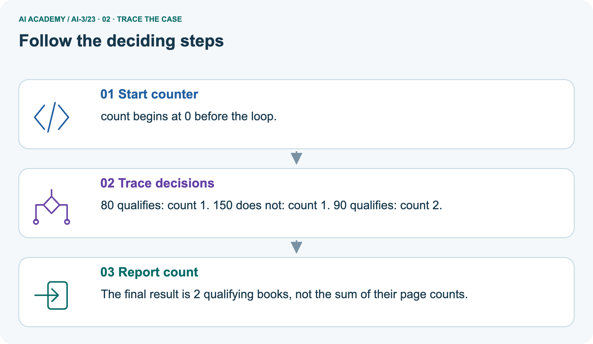
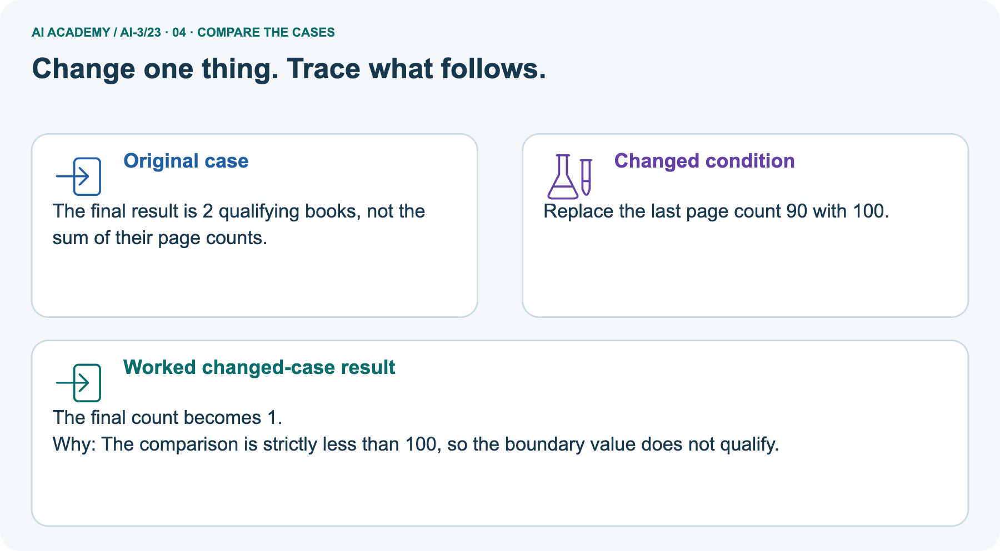
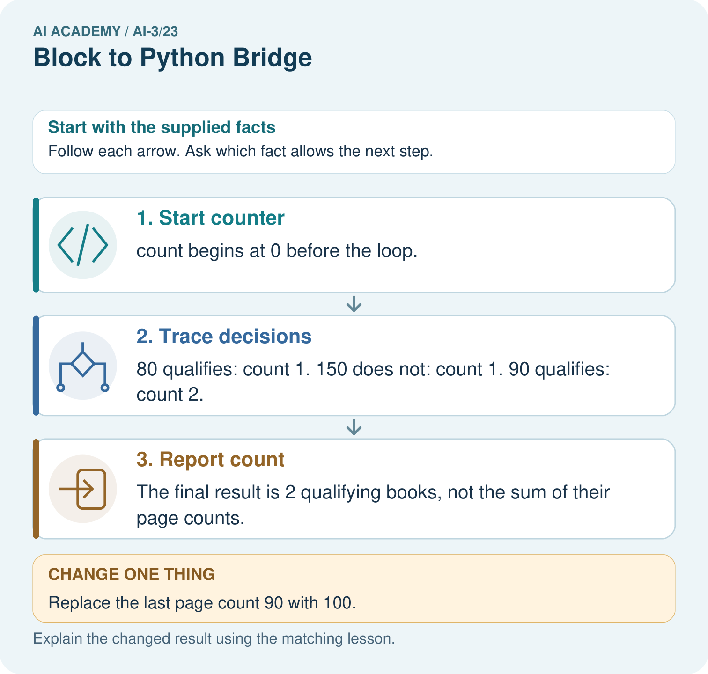
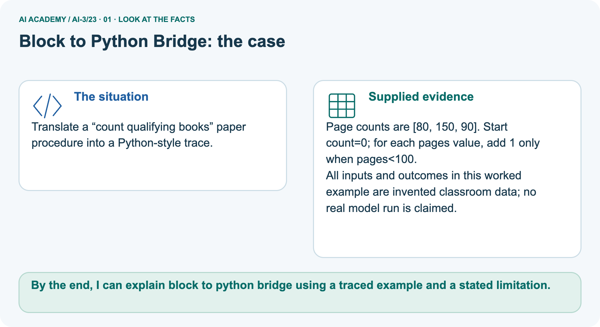
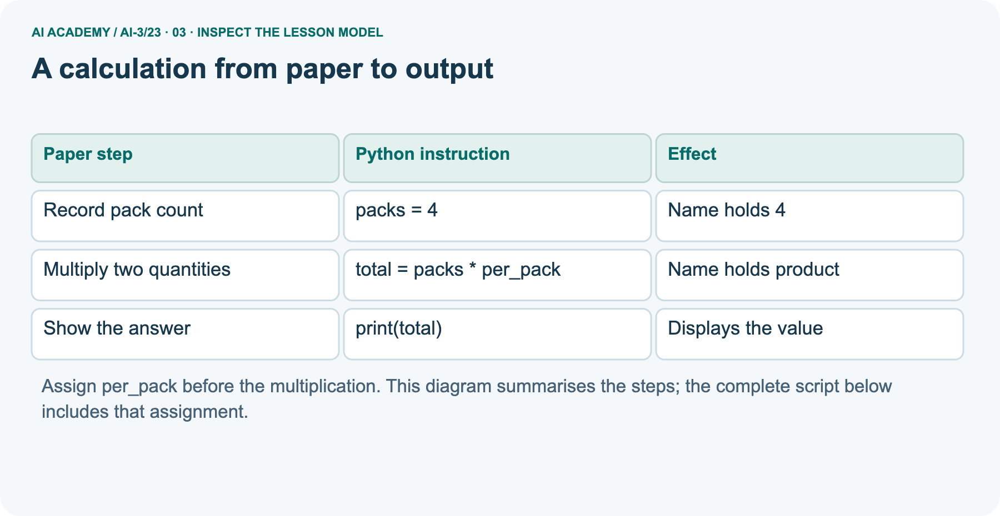
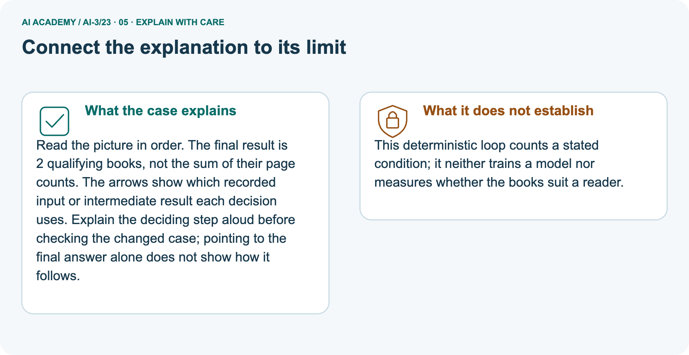
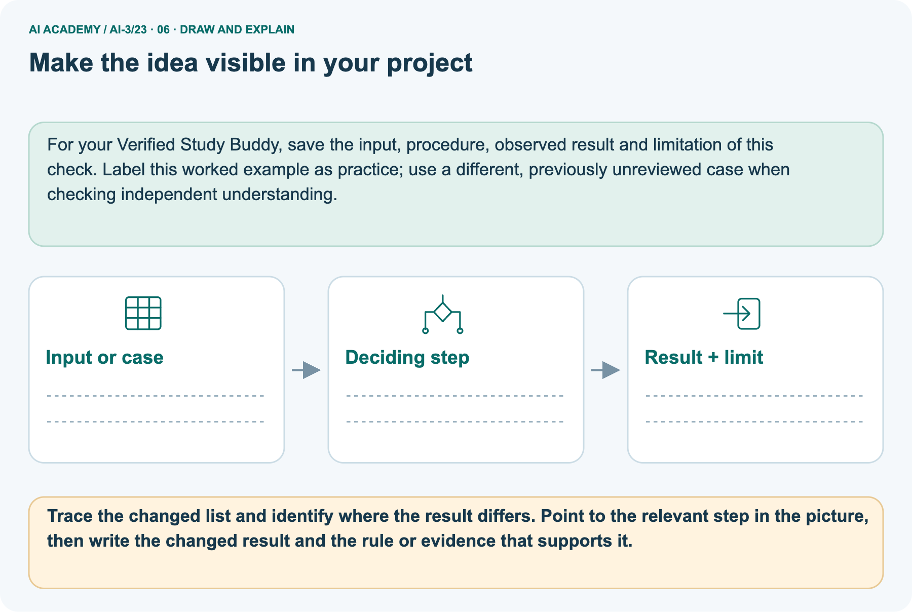

AI Academy · Level 3 · Grade 8 · Week 23 · Student lesson
Block to Python Bridge
Learn to understand, design, build, test and explain AI systems responsibly.
Project: Verified Study Buddy
THE CONNECTED WEEK
Map the actions. Predict the state. Check the actual result.
Translate bounded paper procedures into Python while preserving order and evidence.
Keep one habit: Packing warm-up → five-action book loop → strict/empty boundaries → missing-field guard → independent sum/reset.
Main lesson · Section 1
Can the same procedure survive a change of representation?
Predict a short script, then keep observed output separate from the prediction.
Your learning goals
I can translate a short paper calculation into a Python script.
I can predict and explain the order of executed statements.
I can keep expected and observed output separate when checking a program.
Recall the calculation and interface
Close your notes first. A rough first answer helps us choose the right starting point; it is not a score for your ability.
Four packs contain six counters each. What steps find and show the total?
Your end goal
By the end, I can explain block to python bridge using a traced example and a stated limitation.
Earlier wording, alternatives and picture transcripts
Your learning target
Remember before reading
Without opening the old lesson, explain one key idea from Requests Responses and JSON. Give an example and a mistake that the idea helps you avoid.
Without opening the old lesson, explain one key idea from Conversation State and Memory. Give an example and a mistake that the idea helps you avoid.
Without opening the old lesson, explain one key idea from Model Memory vs Retrieval. Give an example and a mistake that the idea helps you avoid.
After trying, check the relevant lesson or ask your teacher. Change the part of your explanation that the evidence shows was wrong.
Week 23: Block-to-Python Bridge
Variables, conditions, lists, loops, and functions carry the same logic across representations.

CREATOR MISSION
Translate a block workflow into readable Python.
Creator name and date:
Readiness for the connected explanation
This week’s end goal
Main lesson · Section 2
Translate the rule before adding syntax
Use a teacher-prepared editor or label a paper trace clearly.
Connect blocks, state and code
A block workflow and Python can express the same ordered procedure. First identify the input values, state changes, conditions and displayed result. Assignment changes a stored value; print displays one. Indentation marks the statements controlled by a loop or condition. The packing program is a short warm-up; the later book-counting trace adds a loop and a strict boundary. Neither procedure trains an AI model.
Read the packing warm-up contract
In Grade 6 you traced rules on paper. Now you will write a small Python program and check what it actually does. Begin with a counter-packing calculation, not the whole activity adviser.
The requirement is to find the total counters in equal packs and display that total. For this first program, the supplied quantities are whole, nonnegative numbers; it does not yet validate typed input.
Run a saved script or trace on paper
Use a teacher-prepared Python 3 editor that can run a saved .py file. Open a new file called counters.py, type the code exactly as shown in the next section, save it, and use the editor’s Run command.
Read the output area separately from the source editor. No account, AI tool, package installation or personal data is needed. If a device is unavailable, trace on paper and label the result predicted rather than executed.
Earlier wording, alternatives and picture transcripts
PICTURE STORY
Notice → Predict → Explain
Begin with visible evidence. Do not explain more than the picture and information support.
MYSTERY
The learners must use block-to-python bridge to solve a problem. What information do they have? What decision or calculation do they make? What would count as evidence that it worked?
Three observations (what you can point to):
My prediction and the clue supporting it:
A closer explanation
Main lesson · Section 3
Trace four ordered packing statements
The input contract supplies nonnegative whole counts; this warm-up does not validate arbitrary input.
Map the paper actions to code
A calculation from paper to output
Complete packing program
packs = 4
per_pack = 6
total = packs * per_pack
print(total)Explain assignment and displayed output
Read the script from top to bottom. The equals sign assigns the value on its right to the name on its left. The star means multiplication. print(total) displays the value of total; it does not display the letters in the name.
Type ordinary straight characters and keep the parentheses. The Python prompt symbols >>> are not part of this saved script.
Explain the deciding step
Point to the input, the deciding step and the result in this week’s visual. Explain the same step in ordinary words. A picture helps when you can say what each part represents.
Earlier wording, alternatives and picture transcripts
VISUAL MECHANISM
Input → Process → Output
Trace the information. At each stage, ask what changed and how you could test it.

↓

↓

Which stage could fail even when the other two are correct? Explain:
A closer explanation
Connect the picture and the explanation
Main lesson · Section 4
Compare a correct procedure with a misplaced statement
Initialization, loop body and final output occupy different positions.
Four pictures with a purpose

Normal case: predict the result and deciding evidence.

Boundary case: identify the exact limit.

Missing information: name what must be clarified.

Transfer case: explain which procedure still applies.
Choose a revealing case
Which case is most likely to reveal a hidden assumption? Why?
Predict the supplied changed case
Change: Replace the last page count 90 with 100.
Check after predicting
Prediction: The final count becomes 1.
Reason: The comparison is strictly less than 100, so the boundary value does not qualify.
Earlier wording, alternatives and picture transcripts
CASE GALLERY
Four Tests, Four Kinds of Evidence
A system is not understood until it survives more than one comfortable example.
NORMAL CASE: predict and name evidence. BOUNDARY CASE: predict and name evidence.
MISSING INFORMATION: predict and name evidence. TRANSFER CASE: predict and name evidence.
Change one thing in the pictured case
Main lesson · Section 6
Trace the book counter one decision at a time
Counting qualifying books differs from summing page counts.
Read the complete book-count input
Translate a “count qualifying books” paper procedure into a Python-style trace.
Page counts are [80, 150, 90]. Start count=0; for each pages value, add 1 only when pages<100.
All inputs and outcomes in this worked example are invented classroom data; no real model run is claimed.
Trace the labelled decisions



Read the picture one step at a time
Read the picture in order. The final result is 2 qualifying books, not the sum of their page counts. The arrows show which recorded input or intermediate result each decision uses.
Explain the deciding step aloud before checking the changed case; pointing to the final answer alone does not show how it follows.
Connect five block actions to executable code
| Block action | Python and effect |
|---|---|
| Set counter once | count = 0 before the loop |
| Repeat for each book | for pages in page_counts: |
| Test the strict rule | if pages < 100: |
| Increase qualifying count | count = count + 1, inside the condition |
| Finish the function | return count after the loop; print the returned result |
def count_short_books(page_counts):
# Supplied input: a list of nonnegative integer page counts.
count = 0
for pages in page_counts:
if pages < 100:
count = count + 1
return count
print(count_short_books([80, 150, 90]))
print(count_short_books([80, 150, 100]))
print(count_short_books([]))
Predict replacing 90 with 100
Change one thing: Replace the last page count 90 with 100. Predict the result before checking the explanation. What remains the same?
Check after predicting



State what this deterministic result does not measure
This deterministic loop counts a stated condition; it neither trains a model nor measures whether the books suit a reader.
Read the labelled picture: Trace the changed list and identify where the result differs. Point to the relevant step in the picture, then write the changed result and the rule or evidence that supports it.
Packing warm-up · Prediction versus observation
Write 24 as the expected output before running. Then copy the actual output into a separate column. A matching result supports this case, not every possible input.
A saved file may contain an old edit: save again and rerun the whole script. Do not type the expected number into the output record without running.
Earlier wording, alternatives and picture transcripts
WORKED EVIDENCE
Reason Step by Step
Predict first. Then check each step. A correct answer without visible reasoning is incomplete evidence.

1. Block: for each passage, check relevance.
2. Python: for passage in passages: ...
3. Condition keeps passages with score ≥ threshold.
4. A function packages the selection logic and can be tested with normal and edge lists.
Recalculate, retrace, or restate the reasoning in your own representation:
CHECK Did the evidence answer the exact question? Did the total, path, or source record stay consistent?
A closer explanation
| After line | Names and values | Displayed output |
|---|---|---|
| packs = 4 | packs is 4 | Nothing yet |
| per_pack = 6 | packs is 4; per_pack is 6 | Nothing yet |
| total = packs * per_pack | total is 24 | Nothing yet |
| print(total) | Values are unchanged | 24 |
Learn from the worked case
Cover the result before checking it. Say what is given, choose the procedure, and follow one step at a time. Then uncover the result and explain your first mismatch. Ask why a step is allowed, not only what number it produces.
A pictorial worked case: Block to Python Bridge
The facts we will use



Why this result follows
What this example does not establish
Main lesson · Section 7
Find a statement placed at the wrong scope
A passing example can hide a changed procedure.
Repair the reset and boundary shortcuts
Claim to repair: Put count=0 inside the loop so it starts fresh for every book. That erases the accumulated count before each decision. In the supplied three-book list it can accidentally finish at 1 instead of 2. Keep initialization before the loop. A different error is using pages<=100 when the rule says fewer than 100; boundary 100 must not qualify.
Explain the state change instead of fixing code until it happens to print the expected number.
Design a revealing follow-up
Earlier wording, alternatives and picture transcripts
ERROR DETECTIVE
Compare → Diagnose → Repair
Do not patch the answer. Find the earliest unsupported assumption, wrong step, or weak evidence.

| Evidence record | Expected | Actual | Likely cause / next test |
|---|---|---|---|
| normal case | works | ||
| boundary case | stated rule | ||
| missing input | safe response | ||
| fresh transfer | generalizes |
Repair one cause. Why is this repair better than changing several things?
A closer explanation
Save the file with the input values, expected and observed outputs, and a short explanation. This program follows a written multiplication rule.
It has not trained a model, predicted somebody’s preferences or checked that real packs contain the stated number. Its conclusion depends on the supplied data. Week 2 examines the values and types behind these names.
Main lesson · Section 8
Practise packing predictions with less help
Use this simple script before the separate book loop.
Complete W2 prediction and observation
Use workbook W2 for the connected example “From a paper algorithm to Python”. First fill the input and rule boxes. Try the middle steps before asking for a hint. After a hint, try the next step yourself.
| Plan | Do | Check |
|---|---|---|
| What is given? Which rule or procedure applies? | Record each intermediate step. | Does the result follow? What remains unknown? |
Check assignment versus display
Use the worked case for From a paper algorithm to Python. Proposed explanation: “An equals sign displays the answer”. Decide whether this explanation is supported.
Point to the step or supplied fact that decides; explain your repair if needed.
Answer on your own before discussion. If you are unsure, say which step you need help with.
Explain the pictured changed list
Trace the changed list and identify where the result differs. Point to the relevant step in the picture, then write the changed result and the rule or evidence that supports it.
Keep independent work separate
This is supported practice. Keep the separately named independent case for an attempt before feedback.
Earlier wording, alternatives and picture transcripts
LOGIC STUDIO
Specify Before You Run
Prompts, schemas, retrieval, tool calls, and code are inspectable parts of one AI product.

SET task, audience, constraints, output_schema LOAD approved_context or retrieval_result CALL model or allowed_tool VALIDATE fields, claims, citations, and safety IF evidence missing: ask, retrieve, or abstain RETURN useful output + source trail + limitations
Trace one input. Which line changes the state or chooses a path?
A closer explanation
Change only packs to 5. Predict the result from five groups of six, save, then run the entire file again. The expected output is 30. Keep the original four-pack result beside the new one and label the changed input.
A comment can explain an instruction: Python ignores text after # outside a string. A comment does not change the calculation.
packs = 5 # five equal packs
per_pack = 6
total = packs * per_pack
print(total)A program can run successfully and still solve the wrong problem. Replacing * with + would display 11 for this input, but addition does not count five groups of six.
Use the requirement and a paper calculation to check meaning; the absence of an error message is not proof of correctness.
Practise with less help: Predict then observe
Explain your trace to a partner. Your partner points to one step to check. Swap roles on the next case. Each person writes their own explanation.
Check your reasoning
Explain the picture
Main lesson · Section 9
Test five complete block-to-code cases
Separate the runnable numeric-list program from a proposed missing-field guard.
All supplied inputs and expected boundaries
| Complete supplied case | Expected procedure/result |
|---|---|
| A · Page list[80,150,90] | Book-count trace0→1→1→2 |
| B · Page list[80,150,100] | Strict boundary excludes100; result 1 |
| C · Empty page list[] | No iterations; initialized count 0 returned |
| D · One book record {"title":"Cedar","pages":80} | pages field supplied; one qualifying book |
| E · One book record {"title":"Maple"}, pages absent | No page measurement; ask for it or report incomplete, not pages 0 |
Translate, predict, run or trace, then explain
Translate the five displayed block actions into the supplied Python function. Predict A/B/C outputs, then run or trace and label your evidence. D/E add a record-reading design question: D has a supplied page value; E does not. The numeric-list function is not a record parser, so do not pass those dictionaries into it.
State a guard that checks the pages field before using it; missing data must not silently become zero. Record any actual errors rather than replacing them with predictions. Keep the independent sum/reset task withheld.
Keep the evidence record
| Test / input | Prediction | Actual | Evidence / calculation | Change or keep? |
|---|---|---|---|---|
| normal | ||||
| boundary | ||||
| missing | ||||
| fresh transfer |
What did the hardest test teach you that the normal test did not?
Before trying: what do I expect, and why? While trying: which step could first go wrong? Afterwards: what did I actually observe, and what should change? Keep “not run” if you only traced the procedure.
Earlier wording, alternatives and picture transcripts
EVIDENCE LAB
Predict → Test → Record → Explain
Keep expected and actual results separate. Surprises are useful data when recorded honestly.

Use the complete five-action book-count mapping and supplied cases A–E. Run or trace numeric lists, including empty and boundary cases. For record cards, explain the missing-pages guard separately; do not claim the numeric-list function parses records or validates arbitrary input.
Plan → try → check
Main lesson · Section 14
Try alone: explain the fresh sum-and-reset procedure
Use the independent values without substituting a practised packing case.
Independent procedure and scope
Set total=0, then for values2,4,9 perform total=total+value. Trace the result. What changes if total=0 moves inside the loop before that addition?
Trace both versions of the supplied sum procedure in order, keeping each intermediate total. Compare initialization before the loop with initialization inside it. This fresh task sums values; do not copy the book counter’s increment-by-one rule.
Your first attempt and help record
Attempt this case before feedback. Record any help. Earlier examples below are further practice; a case already practised with feedback cannot establish fresh transfer.
Your teacher has the independent answer and scoring criteria. Complete the matching workbook week to keep your practice evidence together.
Use feedback afterwards
Attempt the independent case before hints. Record whether you worked alone, used a hint or followed a model. After feedback, fix the first unsupported step and explain why it changed.
A later check uses a changed case, not a copied answer.
Earlier wording, alternatives and picture transcripts
Independent case: Changed independent case
Week 23 Independent application
Close the worked explanation. Apply the idea to this different question without copying.
Trace this Python: score = 2; then if score >= 2: score = score + 3. What is the final value, and what changes if the condition becomes score > 2?
My answer, with a trace, calculation or supporting evidence
Create and test
Change one relevant detail. Predict the result before testing. Include a boundary or missing-information case when it helps reveal a limit.
My changed input and expected result
Connect to your project
Implement small transparent functions for selection, validation, and citation formatting.
The evidence I will keep
Transfer practice from the original programme
Write Python that totals [3,5,7], then trace each total. Explain how indenting 'total=0' inside the loop changes the result.
Use feedback to improve
Main lesson · Section 11
Keep the project’s code and evidence together
Translate one stage with a clear input contract.
This week’s contribution
For the Verified Study Buddy, translate one bounded deterministic stage into readable code before attempting a full assistant. Keep source values, assignment, decisions, output and input assumptions visible. Save the code version and distinguish predicted output, executed output, paper trace and error. A working loop is evidence for the supplied computation, not model training or learner benefit.
Retain the checkpoint and human choice
THIS WEEK’S CHECKPOINT Implement small transparent functions for selection, validation, and citation formatting.
SYSTEM MAP Learner need → prompt/schema → approved sources/retrieval → model/tool → structured answer → verification → human decision
What will you add, change, or verify in the project this week?
What should remain under human control?
RESPONSIBLE DESIGN Collect only necessary information. Show uncertainty and limits. Never confuse fluent output with verified truth.
Earlier wording, alternatives and picture transcripts
CUMULATIVE PROJECT
Verified Study Buddy
Every week adds one inspectable piece. The system must show how it reached a result.

Evidence for your project
For your Verified Study Buddy, save the input, procedure, observed result and limitation of this check.
Label this worked example as practice; use a different, previously unreviewed case when checking independent understanding.
Main lesson · Section 16
Finish: explain order, indentation and the evidence of a run
A correct prediction and a successful execution are distinct records.
Explain without notes
Close your notes. Explain this goal in your own words: Translate a short paper calculation into a Python script
Plan a changed-case return
If you are unsure, return to the worked picture and explain one arrow. If you are ready, change an input or assumption and justify your prediction.
Save your workbook evidence. At the next review, try a different case before opening your old answer.
Reference bank and extra practice
Choose the reference that helps your next step.
Your quick word guide
Reference · Section 5
Your quick word guide
Use the words to explain a particular step, record or limit.
Core vocabulary
| Word | My own example | Not this / boundary |
|---|---|---|
| variable | A named reference to a value that can be used or changed in a program. | |
| list | An ordered collection of items. | |
| function | A named unit of code that performs a task, optionally receiving arguments and returning a value. | |
| condition | A statement evaluated as true or false to help select an action. |
Terms for the connected explanation
| Word | Meaning |
|---|---|
| Algorithm | An ordered procedure for solving a stated problem |
| Program | Instructions written in a language a computer can execute |
| Interpreter | Software that executes Python instructions |
| Assignment | Binding a name to the value of an expression |
| Output | Information a program displays or returns |
Earlier wording, alternatives and picture transcripts
VOCABULARY LAB
Words You Can Use to Reason
A definition matters when you can recognize the idea, use it, and contrast it with a near-miss.


Words used in the closer explanation
Choose a stronger thinking challenge
Reference · Section 10
Choose a stronger thinking challenge
Choose the next useful challenge rather than treating the whole ladder as compulsory.
Pick your next step
1 • NAME: Define the concept without repeating the textbook.
2 • TRACE: Show the information, state, branch, calculation, or evidence path.
3 • APPLY: Solve a different example independently.
4 • CHALLENGE: Find a boundary case, counterexample, or unfair outcome.
5 • EXPLAIN LIMITS: Say when the result should not be trusted or used alone.
My strongest evidence of independent understanding:
Earlier wording, alternatives and picture transcripts
MASTERY
From Knowing the Word to Owning the Idea
Move upward only when you can produce evidence without copying the worked example.

Reference: check your explanation
Reference · Section 12
Reference: check your explanation
Use after practice. Trace the new sum/reset procedure independently is the selected independent case.
Check the evidence and its limit
1. My fresh example, trace, calculation, or design:
2. My evidence that it works (include a boundary or missing-data case):
3. One limitation, fairness concern, or situation needing human review:
Self-check and record
SELF-CHECK □ I explained the mechanism □ I used evidence □ I tested a fresh case □ I named a limitation □ I can answer ‘why?’
Earlier wording, alternatives and picture transcripts
INDEPENDENT MASTERY PROOF
Checklist for explaining this week’s idea
Use after practice. Trace the new sum/reset procedure independently is the selected independent case.

EXPLANATION CHECK Require ordered intermediate state, initialization scope and separation of paper trace from executed output.
Extra practice: Trace the accumulator inside the loop
Reference · Section 13
Extra practice: Trace the accumulator inside the loop
Try the question before opening its worked explanation.
Read the supplied case and question
A block program sets total=0 and adds each value in [2,4,6].
Translate and trace.
Your explanation
Which detail supports the answer, and why does it matter?
Check after trying
Python uses total=0, then an indented total += value inside for value in [2,4,6]. Totals are 2,6,12.
| Evidence or stage | Value or result |
|---|---|
| Start total | 0 |
| Add 2 | 2 |
| Add 4 | 6 |
| Add 6 | 12 |
Earlier wording, alternatives and picture transcripts
Week 23 Worked case
Use the supplied details to practise the weekly concept before attempting the independent question. This case extends the illustrated lesson.
The situation
The question
Worked explanation
Explain it in your own words
Trace the supplied case visually
Trace the accumulator inside the loop
A block program sets total=0 and adds each value in [2,4,6].
Translate and trace.
Python uses total=0, then an indented total += value inside for value in [2,4,6]. Totals are 2,6,12.
Reference: original lesson checklist
Reference · Section 15
Reference: original lesson checklist
Use an additional checklist when it helps inspect your explanation.
Targets and evidence
| By the end, I can | How I will show it |
|---|---|
| Translate a short paper calculation into a Python script | Explain the deciding step, show a trace or test, and state one limit. |
| Predict and explain the order of executed statements | Explain the deciding step, show a trace or test, and state one limit. |
| Keep expected and observed output separate when checking a program | Explain the deciding step, show a trace or test, and state one limit. |
Keep your route and first prediction
Remember → watch and explain → try with help → investigate → try independently → keep project evidence. Your teacher may spread this lesson across several classes.
Keep your first prediction. Compare it with what the evidence shows and explain any change.
Earlier wording, alternatives and picture transcripts
Start with this question: Translate a “count qualifying books” paper procedure into a Python-style trace.
Extra practice: pictures, repair and feedback
Reference · Section 17
Extra practice: pictures, repair and feedback
Attempt each question before opening its explanation. Use one browser or paper copy.
First supported question
Translate a “count qualifying books” paper procedure into a Python-style trace.
Which labelled step matches this detail? The final result is 2 qualifying books, not the sum of their page counts.
1. Trace decisions
2. Start counter
3. Report count
Hint if needed: Read the steps in the pictorial case. Match the supplied detail to the stage that performs or records it.
After your attempt, compare with the supported explanation: Report count The final result is 2 qualifying books, not the sum of their page counts. Read the picture in order.
The final result is 2 qualifying books, not the sum of their page counts. The arrows show which recorded input or intermediate result each decision uses.
Explain the deciding step aloud before checking the changed case; pointing to the final answer alone does not show how it follows.
Practice 1: explain the deciding evidence
Check the first explanation
Practice 2: explain the deciding evidence
Changed-case question
Changed-case practice: Replace the last page count 90 with 100. Which conclusion is supported by the supplied facts?
1. This one example guarantees correct results for every future input.
2. We can decide the result without examining the changed input or the procedure.
3. The final count becomes 1.
Hint if needed: Use the changed condition and the deciding step in the pictorial trace. The answer must say what follows from those facts.
After your attempt, compare with the supported explanation: The final count becomes 1. The comparison is strictly less than 100, so the boundary value does not qualify.
Check the changed case
Repair a missing building block
Repair and save your work
Review Requests Responses and JSON (ai-3/22). Goal: Parse JSON into Python records. Short practice: Would converting the text silently prove the source count is correct?
Point to the relevant step in the picture, then write the changed result and the rule or evidence that supports it.. Return to this week and explain what you changed.
Review Conversation State and Memory (ai-3/20). Goal: Explain the mechanism and terminology of conversation state and retention. Short practice: What is selected_book after the correction and after exit?
Point to the relevant step in the picture, then write the changed result and the rule or evidence that supports it.. Return to this week and explain what you changed.
Review Model Memory vs Retrieval (ai-3/17). Goal: Explain the mechanism and terminology of retrieval and indexing. Short practice: Why can the assistant not certify 15: 00 when the notice is missing?
Point to the relevant step in the picture, then write the changed result and the rule or evidence that supports it.. Return to this week and explain what you changed.
The browser lab lets you edit the supported Python examples already included in this lesson. Predict first, run, inspect the actual output or error, change one input, then run again.
Keep code, predictions, actual results and a reasoned revision together. On paper, label your result as a trace rather than an execution.
Use Download completed work in the hosted lesson to export your answers, reflections, practice feedback and code-run evidence. Open the HTML copy to read or print it.
Drafts stay in this browser when storage is available; clear drafts on a shared device.
Earlier wording, alternatives and picture transcripts
Use this supported practice once, in the browser or on paper. Keep the reserved independent assessment for a separate first attempt before teacher feedback.
Predict, run and debug
Keep your completed work
Reference: the six-picture journey
Reference · Section 18
Reference: the six-picture journey
Revisit the picture that serves the current question; key diagrams already sit beside the main explanation.
01. Block to Python Bridge: the case



Translate a “count qualifying books” paper procedure into a Python-style trace. Supplied facts: Page counts are [80, 150, 90]. Start count=0; for each pages value, add 1 only when pages<100.
All inputs and outcomes in this worked example are invented classroom data; no real model run is claimed.
Point to the given fact that matters most. Explain why it matters.
02. Follow the deciding steps
Start counter: count begins at 0 before the loop. → Trace decisions: 80 qualifies: count 1. 150 does not: count 1. 90 qualifies: count 2. → Report count: The final result is 2 qualifying books, not the sum of their page counts.
Point to each numbered stage and explain which recorded input it uses.
03. A calculation from paper to output



A calculation from paper to output. Record pack count | packs = 4 | Name holds 4. Multiply two quantities | total = packs * per_pack | Name holds product. Show the answer | print(total) | Displays the value
Read the labels and values. Explain the relationship the model shows.
04. Change one thing. Trace what follows.
Original case: The final result is 2 qualifying books, not the sum of their page counts. Changed condition: Replace the last page count 90 with 100. Expected result: The final count becomes 1.
Reason: The comparison is strictly less than 100, so the boundary value does not qualify.
Predict before checking the worked changed-case result. Name what changed and what the supplied facts allow you to conclude.
05. Connect the explanation to its limit



Read the picture in order. The final result is 2 qualifying books, not the sum of their page counts. The arrows show which recorded input or intermediate result each decision uses.
Explain the deciding step aloud before checking the changed case; pointing to the final answer alone does not show how it follows.
Limit: This deterministic loop counts a stated condition; it neither trains a model nor measures whether the books suit a reader.
Explain the case, then point to a limit on the claim.
06. Make the idea visible in your project



For your Verified Study Buddy, save the input, procedure, observed result and limitation of this check.
Label this worked example as practice; use a different, previously unreviewed case when checking independent understanding. Draw your input, deciding step, result and limit.
Supported question: Trace the changed list and identify where the result differs. Point to the relevant step in the picture, then write the changed result and the rule or evidence that supports it.
Draw your project trace and justify the deciding step using evidence.